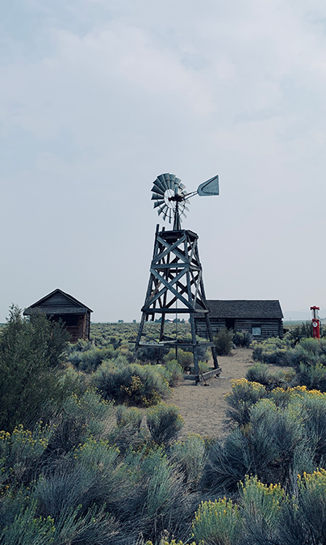
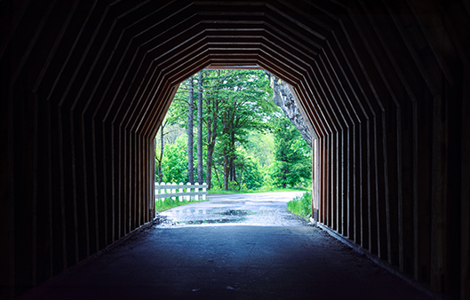
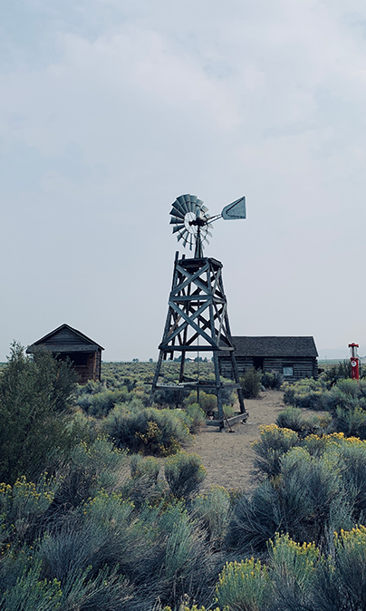
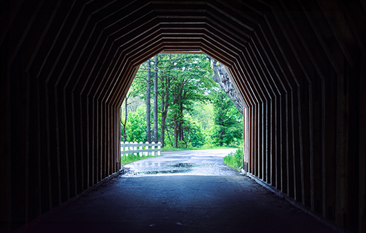

Explore My Portfolio
Welcome to my portfolio. Here, you'll discover a meticulously curated collection of photographs that embody the essence of storytelling through photography. Each collection has been carefully assembled to offer a diverse range of visual narratives.
Nature
Embark through scenic landscapes in vertical and horizontal ways that capture the breathtaking beauty of our world. From snow-capped mountains to thick forests, each image transports you to a different natural wonder.
Urban
Discover the vibrant pulse of the hidden treasures in urban environments and cities. These photographs encapsulate the energy, architecture, and spirit of various urban landscapes.
 



Macro
Explore the miniature world through the art of macro photography. This collection shows the intricate details of nature, each beauty and complexity found in the smallest of subjects. From delicate flowers to tiny insects and captivating textures, each image magnifies the beauty of the unseen world, revealing details that often go unnoticed.
Film
Get a glimpse of stories captured through film photography. This collection revisits the artistry and nostalgia of analog frames.